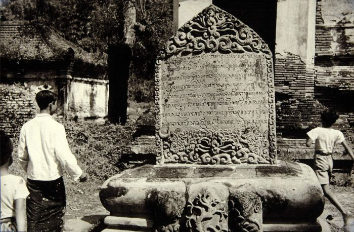

Sejarah

Gresik sudah menjadi salah satu pelabuhan utama dan kota dagang yang cukup penting sejak abad ke-14, serta menjadi tempat persinggahan kapal-kapal dari Maluku menuju Sumatra dan daratan Asia (termasuk India dan Persia). Hal ini berlanjut hingga era VOC.
Pada tahun 1680 kedatuan Giri tunduk dibawah Mataram, selanjutnya Gresik dipegang oleh Kyai Puspodiwangsa pada tahun 1688, dengan nama gelar Kyai Tumenggung Pusponegoro. Tahun 1738 Gresik diambil alih oleh Madura ketika Bupati-Bupati Jawa di Mataram, kemudian Bupati Gresik merebut kembali tahta Gresik dibantu Oleh Bupati Ponorogo hingga kembali.
Geografis
Secara geografis, wilayah Kabupaten Gresik terletak antara 112° – 113° Bujur Timur dan 7° – 8° Lintang Selatan dan merupakan dataran rendah dengan ketinggian 2 sampai 12 meter diatas permukaan air laut, kecuali Kecamatan Panceng yang mempunyai ketinggian 25 meter di atas permukaan air laut.
Wisata
Kota Gresik mempunyai beberapa tempat wisata yang terletak di bawah permukaan air laut, yaitu:
Pulau Bawean

Pulau Bawean, dikenal akan kecantikan alamnya, dan salah satu permata tersembunyi yang harus dijelajahi adalah Pulau Gili Noko. Pulau ini, yang juga sering disebut sebagai ‘Surga’ pantai di Pulau Putri, memiliki daya tarik luar biasa dengan pasir putih yang lembut, air laut yang tenang.
Lontar Sewu
Edu Wisata Lontar Sewu merupakan salah satu objek wisata alam di Kabupaten Gresik. Tempat wisata yang memadukan wisata edukasi dengan alam pedesaan. Objek wisata dan tempat liburan dengan konsep belajar pemanfaatan alam sekaligus sebagai tempat rekreasi keluarga.